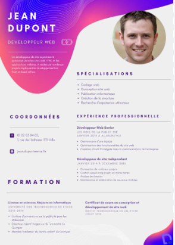

About
Salut moi c'est Jean, je suis un développeur Web passionné dans la conception de site web. J'ai 27 ans et je suis pere de 2 enfants avec une femme aimante et travail a la sueur de mon frond .
Travail
je suis Jean, passionné du numérique, créatif et méticuleux. En jonglant avec HTML, CSS et JavaScript, je transforme des lignes de code en expériences interactives captivantes. Chaque projet est une toile vierge où ma créativité s'épanouit, résolvant habilement des défis pour créer des interfaces fluides et intuitives. Au-delà du métier de développeur web, je suis voyage continu de découverte pour Jean. En équipe, je brille par sa communication transparente et sa capacité à simplifier le jargon technique. En dehors du travail, je nourrit la communauté en participant activement à des meetups, conférences et forums en ligne, incitant à l'évolution collaborative du web. En somme, Jean incarne l'harmonie entre technologie et créativité. Une ligne de code à la fois, je façonne activement des expériences en ligne exceptionnelles pour tous. Regarder ma dernière video youtube
CV
J'ai travaillé dans le passé à SAGAM SECURITY en cyber sécurité et aujourd'hui je veux postuler chez GoMyCode pour etre developpeur. Voici mon CV 
Contact